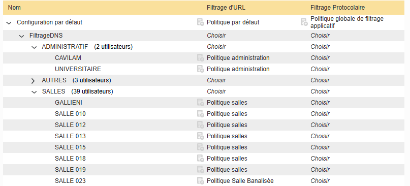

Auparavant, le filtrage web était assuré par les firewalls du pôle. Nous avons depuis déployé un serveur OLFEO dédié à cette fonction, ce qui nous a permis de supprimer ces règles devenues obsolètes. Les nouvelles règles destinées aux futurs firewalls ont été documentées dans un fichier Excel.
